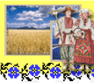
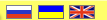
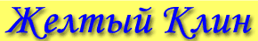
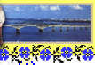
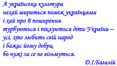
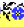

|  |  |  |
|  |
|
Поселения Организации Научные материалы Творчество Новости Об Украине Гостевая Меценаты Ссылки |

Уважаемый посетитель!Мы рады приветствовать Вас на сайте "Желтый клин", посвященном истории и культуре украинцев Нижнего Поволжья. Основной целью проекта является сбор и представление информации об историко-культурном нследии и современной жизни украинцев Нижнего Поволжья. Создатели сайта ставят перед собой задачу объединения усилий ученых и всех небезразличных людей в изучении и сохранении истории и культуры украинского народа. В рубрике поселения представлена информация об истории заселения украинцами Нижнеповожского края с начала XVIII в. и до настоящего времени. В алфавитном указателе населенных пунктов дана истрическая справка о каждом населенном пункте, где украинцы составляют основную или значительную часть его жителей. |
|  |